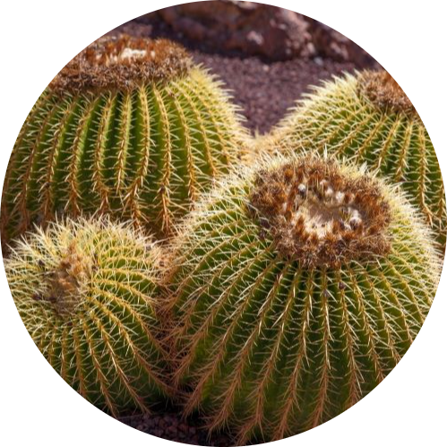

Golden Barrel Cactus
Water: once every 1-3 weeks depending on season.
Golden Barrel Cactus: Thrives in high temperatures but can also resist cold climates. Should provide as much sunshine as possible. Should be watered once a week during summer and should only be watered only 2-3 weeks in the winter or when soil is dry to avoid rotting. Only apply small amounts (half to quarter of a cup) to avoid rotting.